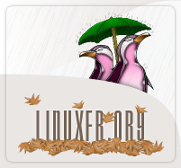

Veille techno et langues
Veille techno :
- Ubuntu.com : ici
- Canonical : ici
- Ubuntu-fr (Le site de la communauté française d'Ubuntu) :
- linuxfr.org (Un site de la commuauté française de Linux) : 
- Phoenixjp (un site d'actu numérique) :
Langues :
- Léo.org : ici
- Traducteur PONS : ici
- Babbel :
- Systran traducteur :